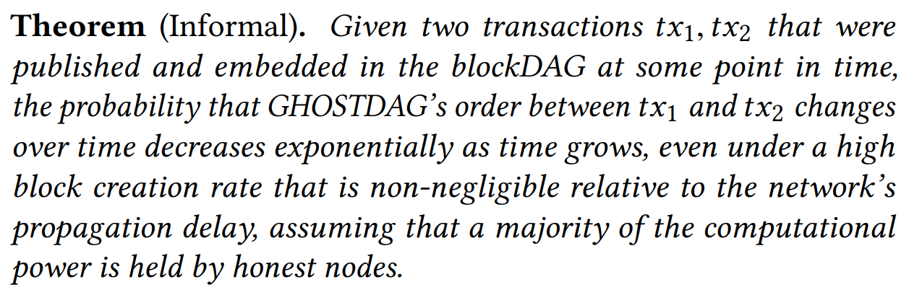

GHOSTDAG
A Scalable Generalization of Nakamoto Consensus

Original paper: GHOSTDAG
The Problem – Scalability/Security tradeoff
- Every block needs to fully propagate before the next one is created.
- The propagation delay is the primary cause for BC forks.
- The BC tries to avoid forks; they are a symptom of inconsistencies.
BC does not scale
Punch Line – GHOSTDAG Protocol
- PoW based.
- Generelizes the longest chain rule to a more "fork" encouraging process.
- Moves from chain to DAG.
- the scalability-security tradeoff.
- 144 blocks per day => 1 million per day.
Some performance data?
The main achievement of GHOSTDAG

What Remains
- Proof of Work
- Miners
- Blocks
- Block Rewards
- Transactions
- Transactions Fees
ONLY OFFER A NEW CONSENSUS ON THE BLOCKS AND THEIR ORDER
PHANTOM PROTOCOL
3 Steps Procedure:
- Use the DAG to extract misbehaved blocks.
- Blocks referenced by only old blocks
- Withheld by their creator for a long time
- Complete the partial order of the DAG to a full topological one.
- The order of blocks dictates an order of transactions.
Terminology
- DAG - Directed Acyclic Graph
- Past(B,G)
- Future(B,G)
- Anticone(B,G)
- Tips(G)
- Blue & Red blocks


Mining Rules
- Reference to in tips(G) when publishing a block.
- Broadcast as quickly as possible.
Ordering Protocol
- Recover from the challenge of inconsistency
- Order all blocks and accept one at a time
- Eliminate inconsistent transactions
K- Clusters


Max k-cluster SubDAG

- Maximum 0-Cluster SubDAG is...
- NP-Hard.
GHOSTDAG Protocol
Graph Algorithm


Video Backgrounds
<section data-background-video="video.mp4,video.webm">... and GIFs!
Background Transitions
Different background transitions are available via the backgroundTransition option. This one's called "zoom".
Reveal.configure({ backgroundTransition: 'zoom' })Background Transitions
You can override background transitions per-slide.
<section data-background-transition="zoom">Iframe Backgrounds
Since reveal.js runs on the web, you can easily embed other web content. Try interacting with the page in the background.
Pretty Code
import React, { useState } from 'react';
function Example() {
const [count, setCount] = useState(0);
return (
<div>
<p>You clicked {count} times</p>
<button onClick={() => setCount(count + 1)}>
Click me
</button>
</div>
);
}
Code syntax highlighting courtesy of highlight.js.
Marvelous List
- No order here
- Or here
- Or here
- Or here
Fantastic Ordered List
- One is smaller than...
- Two is smaller than...
- Three!
Tabular Tables
| Item | Value | Quantity |
|---|---|---|
| Apples | $1 | 7 |
| Lemonade | $2 | 18 |
| Bread | $3 | 2 |
Clever Quotes
These guys come in two forms, inline: The
nice thing about standards is that there are so many to choose from
and block:
“For years there has been a theory that millions of monkeys typing at random on millions of typewriters would reproduce the entire works of Shakespeare. The Internet has proven this theory to be untrue.”
Intergalactic Interconnections
You can link between slides internally, like this.
Speaker View
There's a speaker view. It includes a timer, preview of the upcoming slide as well as your speaker notes.
Press the S key to try it out.
Export to PDF
Presentations can be exported to PDF, here's an example:
Global State
Set data-state="something" on a slide and "something"
will be added as a class to the document element when the slide is open. This lets you
apply broader style changes, like switching the page background.
State Events
Additionally custom events can be triggered on a per slide basis by binding to the
data-state name.
Reveal.addEventListener( 'customevent', function() {
console.log( '"customevent" has fired' );
} );
Take a Moment
Press B or . on your keyboard to pause the presentation. This is helpful when you're on stage and want to take distracting slides off the screen.
Much more
- Right-to-left support
- Extensive JavaScript API
- Auto-progression
- Parallax backgrounds
- Custom keyboard bindings